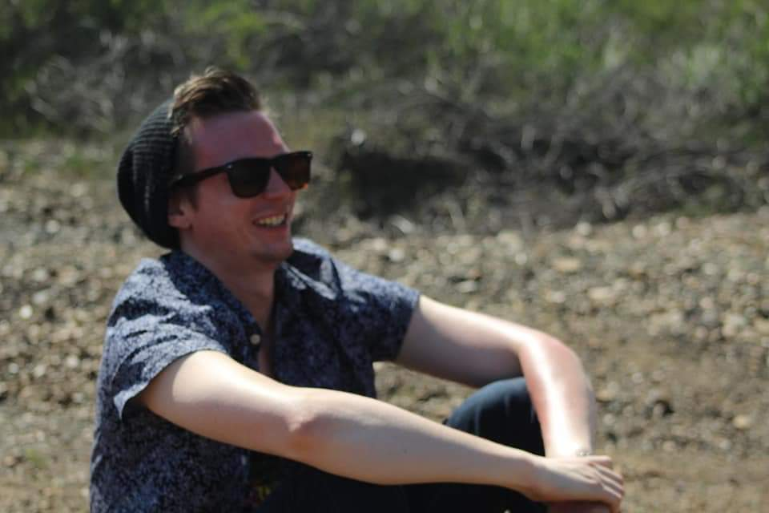

About me

Hello! My name is Arthur, but you can call me AJ.
My journey began at County College of Morris (CCM), where I majored in Music Recording. I then went to Montclair State University (MSU) and majored in Television & Digital Media with a concentration in audio.
Lastly, I am currently attending New Jersey Insititue of Technology for a Master's in Information Systems (fun fact, I made this site from scratch!)
My career started in 2016 at Daily Racing Form (DRF) as the Associate Producer on the video team. In 2019, I was promoted to Lead Producer.
During the pandemic, I decided to change fields and applied to NJIT for a Master's in IT. After lots of trial and error, I finally landed on Web Development.
While I attend grad school, I am currently freelancing for New York Road Runners (NYRR) and In the Money Media (ITM) as a video producer. This includes on field shoots for races in NYC, producing livestreams, and editing features.